Optagelsesprøve til de gymnasiale uddannelser
Fredag den 4. april 2025
Kl. 10.00-14.00
Du har i alt 4 timer til prøven. Du bestemmer selv, i hvilken rækkefølge du besvarer opgaverne, og hvor lang tid du bruger på opgaverne i hvert fag.
Det er ikke tilladt at bruge internettet som fagligt hjælpemiddel eller foretage søgninger på
internettet, fx ved hjælp af Google.
Det er ikke tilladt at kommunikere med omverdenen.
Det er tilladt at benytte alle øvrige hjælpemidler, fx lærebøger, formelsamlinger, lommeregner, ordbøger, grammatiske oversigter og noter. Disse hjælpemidler kan enten medbringes på computeren eller på papir. Skolen kan tillade, at ordbøger tilgås via internettet.
Din besvarelse skal afleveres i et samlet dokument. Når du er klar til at aflevere din besvarelse, skal du gøre følgende:
- Tryk på knappen ’Dan og gem pdf’ i menuen i venstre side.
- Navngiv din besvarelse ’Optagelsesprøve’ og gem dokumentet på din computer.
- Aflever din besvarelse i Netprøver.
Optagelsesprøven er i udgangspunktet anonym for dem, som skal bedømme din besvarelse. Det er derfor vigtigt, at du ikke skriver dit navn noget sted i besvarelsen eller i titlen på dit dokument, som du afleverer i Netprøver.
Dansk
Prøven i dansk består af tre delprøver:
- Den første delprøve er en læsefærdighedsprøve, der består af to tekster. Til hver af de to tekster er udarbejdet 10 opgaver. Alle opgaver skal besvares.
- Den anden delprøve er en grammatisk færdighedsprøve, hvor teksten skal omskrives i tid.
- Den tredje delprøve er en skriftlig færdighedsprøve.
Du kan højst få 25 point i danskprøven:
| Opgave | Antal mulige point |
|---|---|
| Læsefærdighed | 12 point |
| Grammatisk færdighed | 6 point |
| Skriftlig færdighed | 7 point |
Dansk
Læsefærdighed - Tekst 1
Til teksten er udarbejdet 10 opgaver. Der er kun ét rigtigt svar til hver opgave.
For at opnå 12 point i den samlede læsefærdighedsprøve (tekst 1 og 2) skal mindst 18 af de i
alt 20 opgaver i prøven være korrekt besvaret.
Jeg hedder ikke Freja
Af Simon Fruelund
- Fat det nu. Du er en fucking tramper. Det er her du hører til.
Magnus sad i den anden ende af bænken, så langt væk han kunne komme, og jeg sagde:
- Drømmer du aldrig om at komme væk fra Skibby? Om at der skal ske noget andet?
Han stirrede på sine gråhvide gummisko for enden af de tynde ben. Hans mund var mærkelig
kantet.
- Vil du virkelig gerne være en af dem? En af de der piger med langt lyst hår, der
smiler til læreren og siger det, han gerne vil høre? Som bor i et hus, hvor alting er
sort og hvidt og nyt.
- Se på mig. Hvor stor er chancen lige for det?
Han trak på skulderen og kiggede væk - over mod det lille torv foran slikbutikken og
burgerrestauranten, hvor der stod nogle caféborde og stole. Jeg kunne se, at der sad en
familie og spiste softice, de lignede ikke nogen her fra området, sommerhusgæster på vej
mod Kulhuse måske, de så så nyvaskede og afslappede ud i deres pastelfarvede
T-shirts.
- Men okay, sagde han og rejste sig op, det er dit liv.
Han gik over til Netto, hvor hans crosser stod lige ved siden af buret med de tomme
mælkekasser.
Han tog hjelmen på med begge hænder, skubbede knallerten fremad og ned fra støttebenet,
satte sig op og kørte hen forbi thai-stedet og ud ad bymidten.
Jeg har kendt Magnus siden 0. klasse, og vi har aldrig været uvenner før. Der har været
perioder undervejs, hvor vi ikke har været venner, f.eks. den sommer i femte klasse,
hvor han kun kunne tale om monster trucks, fordi hans far havde taget ham med til et
show nede ved Høng, men det er jo ikke det samme som at være uvenner. Det var bare en
mild form for ligegyldighed, ikke to hænder, der griber fat om ens tarme og vrider dem
som en karklud.
Jeg røg en cigaret og tænkte: Det her er den sidste, og så gik jeg hjem og røg en mere.
Min mor var ikke hjemme, og lidt senere kom Laura og Malte over for at se Paradise.
Jeg skrev til Magnus næste dag og tre dage efter og igen, da der var gået en uge, men
han svarede ikke. Jeg badede med Karoline nede i Gershøj hver dag, og da der midt i juli
kom alger, tog vi til Sæbybadet i stedet. Jeg kyssede med en fyr fra Dalby, og så var
ferien slut. Jeg startede på Katten1 og kom i klasse med en masse langbenede
piger, der
talte lærerne efter munden, sendte skarpe sideblikke og kastede med deres lange hår.
Hvordan overlever man her, når man er to lorte høj, har bølget mellemblondt hår og
kommer fra Skibby? Jeg lavede gruppearbejde med en pige fra Trekroner, der boede i et
rækkehus, hvor alting var sort og hvidt og nyt, og jeg tænkte: Godt at jeg bor så langt
væk, her kommer studentervognen aldrig op, her er der ingen, der vil lave
gruppearbejde.
Når jeg kom hjem med bussen, så jeg nogle gange Magnus hænge ud foran Netto, og jeg
skrev til ham et par gange i løbet af efteråret, men han ghostede mig.
Jeg fik 4 i NV2 og 7 i AP3, og i begyndelsen af november ringede
Malte til mig midt om natten.
- Du skal ringe efter en ambulance. Magnus ligger nede på Selsøvej lige uden for
byskiltet.
Jeg ringede 112, og de fortalte, at de allerede havde fået et opkald.
Så spurtede jeg derned.
Der holdt en firhjulstrækker i vejkanten, og en mand sad på hug ved siden af Magnus og
talte til ham. Crosseren var helt smadret og lå midt på vejen.
Jeg kunne se, at han genkendte mig, men jeg kunne ikke læse det blik, han sendte. Jeg
tog hans hånd, den var helt indsmurt i blod.
Manden fortalte om en jolle, han havde liggende nede i Skuldelev Havn. Han fortalte om
hornfisk og multer og en stor havørred, han havde taget lige ud for Eskilsø. Han
fortalte om, hvor rolig man bliver af at sidde i sådan en jolle og vente på bid. En dag
skal vi ud og fiske, sagde han, du må også gerne tage din veninde med.
Jeg hørte ikke det hele. Jeg lyttede til Magnus’ vejrtrækning, som var svag, men stabil,
og holdt godt fast i de blodige fingre.
Jeg kom til at tænke på vores første dag i 0. klasse.
Alle forældrene var der – også Magnus’ mor som var meget yngre end de andre. Hun må være
blevet gravid som 16-årig.
Magnus var en tynd 6-årig med meget kort lyst hår og stritører, og da Sanne (det hed
vores lærer) havde talt i et minut, rakte han hånden op.
- Ja, Magnus?
- Jeg synes, du snakker for meget.
Forældrene skraldgrinede, og jeg kiggede på ham og var helt solgt. Jeg tænkte: Han skal
være min ven.
Vi var det perfekte match, ingen af os kunne koncentrere os om en skid. Vi var slet ikke
klar til at gå i skole.
Den start forfulgte mig hele vejen, indtil vi fik Sille i 9. klasse.
Jeg sagde aldrig noget, men hun kiggede på mig på en bestemt måde, som om hun kendte
mig, som om hun regnede med mig, som om hun måske så sig selv i mig, jeg ved det
ikke.
Jeg begyndte at forberede mig til hendes timer, og det greb om sig. Pludselig var jeg
erklæret egnet til gymnasiet. Jeg fortalte det selvfølgelig ikke til nogen af de
andre.
Vi ventede og ventede dér lige uden for byskiltet, jeg holdt forsigtigt om Magnus’ hånd,
og da ambulancen endelig kom, fik jeg lov at køre med.
Han blev opereret to gange og lagt i kunstig koma, og jeg sad hos ham i fem dage.
Hans mor sad der også, hans far kiggede forbi et par gange om dagen, men Malte og de
andre drenge så vi ikke noget til.
De havde alle sammen ulovlige knallerter, ikke en af dem kørte under 80, det var derfor
de var kørt videre og havde bedt mig om at ringe.
Magnus skal væk fra de fucking tabere, tænkte jeg.
Jeg forestillede mig, hvordan det ville gå i 1.g. på Katten. Hvad ville der ske, hvis
han bad latinlæreren om at tale lidt mindre?
Det ville være fantastisk.
Jeg spurgte Magnus’ mor, om hun kunne huske den første dag i 0., og det kunne hun
ikke.
Hun smilede, da jeg fortalte historien, og det var den eneste gang, jeg så hende smile i
de fem dage.
Jeg læste en nyhed, mens jeg sad dér og gloede: Sneen er ved at smelte på Mount Everest,
og ligene af alle de amerikanere og europæere, der er døde på vej til toppen, popper op. Hvad fanden er det for en verden? Har alle bare hovedet oppe i røven på sig selv?
På fjerdedagen fik jeg en advarsel fra gymnasiet på grund af for meget fravær, og jeg
ringede til Trivsels-Jan.
- Vi er lidt bekymrede for dit fravær, sagde han.
- Min ven er kørt galt og ligger i koma.
- Ja, det lyder jo vældig alvorligt. Men er du sikker på, at det er din opgave? Han
vågner vel ikke hurtigere, fordi du sidder ved siden af?
- Trivsels-Jan, har du nogen venner?
- Min bedste ven hedder Georg. Han er lige blevet skilt. Han er faktisk ret ked af
det.
- Så synes jeg, du skal tage dagen fri og tage hen til ham. Så kan vi snakkes ved, når
jeg er tilbage.
- Det var måske en god ide? Tak skal du have, Freja.
Jeg hedder ikke Freja, men fuck nu det.
Da Magnus endelig vågnede, kiggede han på mig og sagde:
- Hvad fanden laver du her?
- Jeg synes, du snakker for meget.
- Hvad? sagde han.
Hans mor grinede.
- Frida fortalte om dengang I startede i 0.
- Du sagde til Sanne, at hun snakkede for meget.
Magnus trak på skuldrene.
- Er det det, du er kommet for at fortælle?
- Vi skal ud at fiske, sagde jeg, vi har fået en ny ven, der har en jolle. Og så skal du
starte på Katten næste år. Der er en prøve, du kan tage. Det bliver fedt. Vi kan følges
i bussen.
- Hold nu kæft, sagde han.
- Nemlig, sagde jeg.
- Du taler for meget.
- Jeg er bare glad for at se dig igen.
1 Katten: Byens katedralskole / gymnasium
2 NV: Naturvidenskabeligt grundforløb
3 AP: Almen Sprogforståelse
(2024)
1. Hvilken type fortæller er der i teksten?
x
x
x
x
2. Hvad er relationen mellem Magnus og fortælleren?
x
x
x
x
3. Hvor gamle er de?
x
x
x
x
4. Hvor længe har fortælleren og Magnus kendt hinanden?
x
x
x
x
5. Hvordan har fortælleren det med, at Magnus kører væk og efterfølgende ikke svarer hende?
x
x
x
x
6. Hvad er det, der ændrer sig for fortælleren i 9.klasse?
x
x
x
x
7. Hvorfor vil fortælleren ikke fortælle sine klassekammerater, at hun er erklæret egnet til gymnasiet?
x
x
x
x
8. Hvorfor bryder Magnus med fortælleren?
x
x
x
x
9. Hvad kan man forstå af telefonsamtalen mellem Trivsels-Jan og fortælleren?
x
x
x
x
10. Temaet kan bedst beskrives med ordene
x
x
x
x
Læsefærdighed - Tekst 2
Til teksten er udarbejdet 10 opgaver. Der er kun ét rigtigt svar til hver opgave.
For at opnå 12 point i den samlede læsefærdighedsprøve (tekst 1 og 2) skal mindst 18 af de
i alt 20 opgaver i prøven være korrekt besvaret.
”Telefonskræk: Jeg vil hellere have en nål gennem næsen end at ringe til en piercer”
Af Kathrine Bækgaard Gade
Det tager minimum fem minutter og to meget (dybe, hårde, rolige, store) indåndinger, før jeg kan ringe og bestille stegte risnudler med tofu og grøntsager fra Nørreports Grill. For jeg lider lidt af telefonskræk.
City Piercing har ikke online-booking. Og det gør mig (bange, glad, lykkelig, vred).
Da jeg for nylig stod med hjertebanken og skulle ringe til City Piercing, gik det op for mig, hvor stor min frygt for telefonopkald egentlig er. Selvom jeg naturligvis ikke var upåvirket af tanken om at lade en fremmed skamfere min næse, var den sværeste del af processen at trykke på det grønne ‘ring-op-ikon’.
Som med så mange andre ting, man kan være bange for edderkopper, tandlæger eller dates med mænd, der kun ejer en enkelt juniordyne, er (frygtfølelsen, lykkefølelsen, skyldfølelsen, træthedsfølelsen) ikke altid helt logisk funderet. Men den er ægte.
Når jeg bestiller takeaway, bruger jeg Wolt, jeg booker altid frisørtiden online, og når jeg en sjælden gang har brug for at kontakte lægen, tyr jeg næsten altid til e-konsultationen – så undgår jeg nemlig fuldstændig telefonens oprindelige funktion: Opkaldet.
Da jeg i sommer opdagede, at jeg havde (fået, mistet, sendt, stjålet) mit pas dagen inden, jeg skulle til flyve til Italien, var en af de største udfordringer, at jeg skulle ringe til borgerservice i Nordvest for at bestille en akuttid.
Men så er det jo (heldigt, sjovt, uheldigt, vigtigt), at det er nemt at forberede sig på de opkald, man er nødt til selv at foretage. Også selvom jeg er pinligt bevidst om, hvor underligt det er at sidde med sin telefon i den ene hånd og en stickynote, hvor der står ‘hej, du snakker med Kathrine Gade’ i den anden.
Men alle fornuftige tanker har det med at forsvinde fra min hjerne, så snart jeg fører telefonen op til (hovedet, håret, panden, øret). Måske er det derfor, jeg altid får andre til at ringe for mig, hvis det er muligt.
I modsætning til at få lavet en piercing gør det ikke fysisk ondt at ringe til et andet menneske. Det er jeg udmærket klar over. Men det kan føles som en fuldstændig (indlysende, nem, uoverkommelig, uskyldig) opgave, som jeg altid udskyder så længe som muligt.
Og hvis et ukendt nummer toner frem på skærmen, opstår der ikke den mindste snert af nysgerrighed. Jeg bliver bare nervøs og undgår ofte at besvare opkaldet.
Hvad er der galt med mig?
Det er min oplevelse, at det lidt er en generationsting. Selvom jeg er 22 år og havde en fastnetversion af udyret derhjemme, er jeg rimelig utrænet ud i telefonsamtalens discipliner. Og foretrækker (aldrig, oftest, pludseligt, sjældent) at kommunikere over besked. En svensk undersøgelse fra analyseinstitut Kantar Sifo viser, at 48 procent af dem mellem 18-29 år er nervøse for at tale i telefon. Og at telefonskrækken aftager, når alderen stiger.
Min kollega fortalte mig for nyligt, at det er en del af et menneskes dannelsesproces at lære at tale med fremmede mennesker. Jeg kan godt se pointen, men for mig handler det mere om selve opkaldet end personen på den anden side af røret. Også selvom jeg godt kan være lidt genert i mødet med andre.
For selve telefonsituationen føles lidt som en (begivenhed, eksamen, ferie, hyggestund), jeg er dømt til at dumpe. En eksamen med bind for øjnene vel at mærke, hvor det er komplet umuligt at se, hvordan folk reagerer på det, jeg siger. Det er en følelse af akut at skulle præstere. Også selvom jeg bare skal ringe og bestille en nummer 13 hos den lokale grillbar. Det er i sandhed en irrationel frygt – og en følelse af inkompetence, jeg meget gerne snart vil (af med, ind i, over på, uden for). For det er en ganske irriterende måde at gå gennem livet på.
Jeg har hørt, at eksponeringsterapi skulle være løsningen. Og med det in mente burde jeg måske skaffe mig et midlertidigt job som telefonsælger. Men i skrivende stund er det altså helt fint blot at være en journalistagtig type, som sporadisk skal ringe rundt til kilder.
Ellers kommer mit nervesystem i hvert fald betydeligt mere på overarbejde, end det allerede er.
Og så må jeg hellere skynde mig at (hviske, mumle, råbe, sige), at jeg selvfølgelig godt kan tale i telefon med mine venner og forældre – selvom vores samtaler også handler om praktik og hvad kodeordet til Disney+ mon er, når FCM skal spille Europa League.
Men ellers er min telefon konstant på ‘forstyr ikke’.
(Heartbeats.dk, september 2024)
Grammatisk færdighed
Du skal følge anvisningen og besvare opgaven. Du kan højst få 6 point for din besvarelse.
Originaltekst:
Jeg skrev til Magnus næste dag og tre dage efter og igen, da der var gået en uge, men han svarede ikke. Jeg badede med Karoline nede i Gershøj hver dag, og da der midt i juli kom alger, tog vi til Sæbybadet i stedet. Jeg kyssede med en fyr fra Dalby, og så var ferien slut. Jeg startede på Katten og kom i klasse med en masse langbenede piger, der talte lærerne efter munden, sendte skarpe sideblikke og kastede med deres lange hår.
Skriv din redigerede version i boksen. Husk at understrege de ændrede udsagnsord som i
eksemplet. Du understreger ordet ved at markere det og dernæst trykke 'U'.
Skriftlig færdighed
Du skal følge anvisningerne i boksen nedenfor og besvare opgaven. Din besvarelse bliver vurderet ud fra følgende kriterier:
-
sammenhæng
-
grammatik
-
retskrivning
-
tegnsætning
Du kan højst få 7 point for din besvarelse.
Med udgangspunkt i novellen Jeg hedder ikke Freja skal du forestille dig, at du er Magnus, som skriver, hvad han tænker, da han forlader Frida på knallerten. Du skal skrive ca. 200 ord.
Skriv din besvarelse i boksen herunder.
Engelsk
Prøven i engelsk består af fem delprøver: fire prøver i sprog og grammatik og en prøve i skriftlig fremstilling.
| Opgave | Antal mulige point |
|---|---|
| Section 1 | 4 point |
| Section 2 | 4 point |
| Section 3 | 4 point |
| Section 4 | 6 point |
| Section 5 | 7 point |
Section 1
Choose the right word.
There are more words than you will need. No word may be used more than once.
There is an example in the first sentence.
- favour
- -
- favours
- -
- favoured
- -
- favourite
- -
- favourites
- -
- favourable
- -
favourably
American reviewers have compared the new horror writer with Stephen King.
Yesterday’s wet conditions the home team, so they won.
To my great regret, my brother has always been my mother’s .
“I’m afraid the proposed tax cuts will the rich,” he said. “And that is not what the government wants.”
They decided to postpone the match until the conditions were more .
Section 2
Read the text below.
Use the word in brackets and write the correct form of the word as shown in the two examples.
I stood watching them. They sounded American, and I thought they were probably young sailors from (a)
Section 3
The London Underground is a 3.0 (structure system, method, technique) of electric trains in London, UK. It started running in 1863 as the Metropolitan Railway, thereby making it the 3.1 (longest, oldest, deepest, fastest) underground railway in the world. After the opening, the system was 3.2 (stolen, cloned, re-built, copied) in many other cities, for example New York and Madrid. Even though it is called the Underground, about half of it runs on the surface. The "Tube" is a slang name for the London Underground because the 3.3 (holes, mines, tunnels, passages) for some of the lines are round tubes running through the ground. Today, trains stop at two hundred and seventy 3.4 (stations, levels, camps, bases) and travel on more than 400 kilometers of track.
Section 4
Find and replace the six mistakes with the correct words.
There is an example in the first sentence.
Section 5
- speed
- -
- only
- -
- hang
- -
- inverted
- -
- thrill
Matematik
Optagelsesprøven i matematik består af 19 opgaver med i alt 25 delopgaver. I hver delopgave kan du opnå 1 point. Samlet set kan du altså højst opnå 25 point i matematik.
Du må bruge alle hjælpemidler, herunder bøger, noter, computer og lommeregner.
- Du kan skrive en brøkstreg ved at bruge dette tegn: / Eksempel: 1/3
- Du kan skrive et gangetegn ved at bruge dette tegn: * Eksempel: 2*6
- Du kan skrive en potens ved at bruge dette tegn: ^ Eksempel: 4^2
Matematik
Opgaver
Opgave 1
Skriv det tal, der består af 3 tusinder og 5 tiere.
Opgave 2
Beregn tallet.
Opgave 3
Skriv en brøk, der har større værdi end \frac{1}{2} men mindre værdi end 1.
Opgave 4
4 børn skal dele 200 kr. ligeligt.
Hvor mange penge får de hver?
Opgave 5
Løs ligningen.
12 = 15 - x
Opgave 6
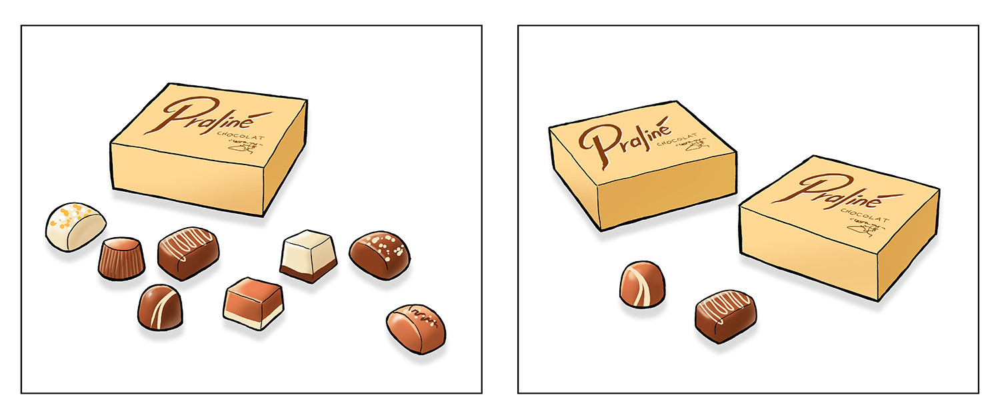
Tegning: Hans Ole HerbstI hver af de to sorte rammer er der nogle æsker og nogle løse stykker chokolade. Alle æskerne indeholder det samme antal stykker chokolade. Der er lige mange stykker chokolade i hver af de to sorte rammer.
Hvor mange stykker chokolade er der i hver æske?
stykker chokolade.
Opgave 7
Hvilket tal er størst? (sæt X)
|
1,08 |
1,31 |
1,29 |
1,068 |
1,102 |
Opgave 8
Opgave 9
Hvad koster skjorten på udsalg?
Opgave 10
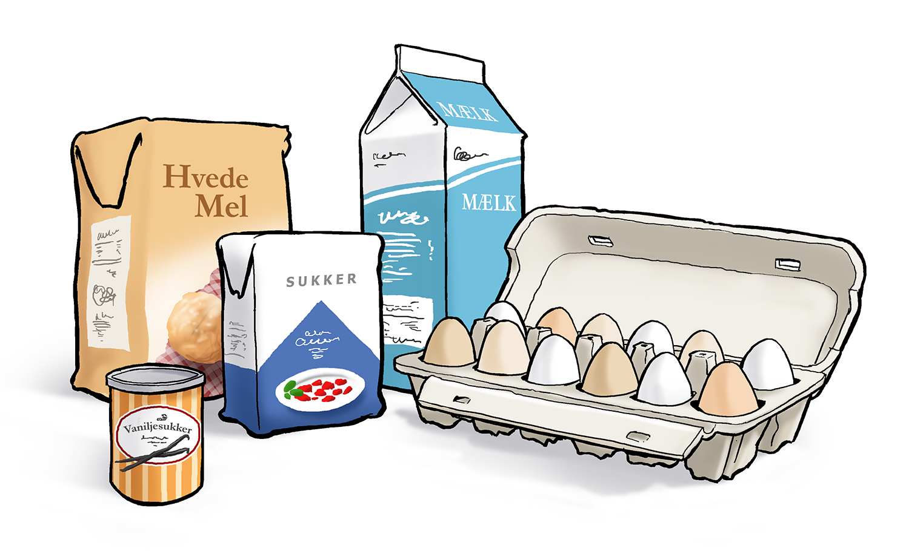
Tegning: Hans Ole Herbst150 g hvedemel
3 dL mælk
4 æg
1 teskefulde vaniljesukker
2 teskefulde sukker
Hvor mange æg skal Hugo bruge?
Hvor mange deciliter mælk skal Vilma bruge?
Opgave 11
Hvilket af følgende udtryk er en rigtig omskrivning af 2 \cdot (n - 2)?
Sæt X
|
2n + 4 |
2n - 2 |
2 + n - 2 |
2n - 4 |
n - 4 |
Opgave 12
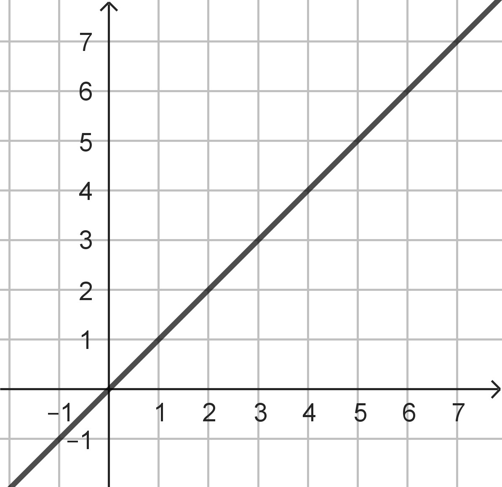
Figuren viser grafen for en linje l.
Hvad er ligningen for linjen?
Sæt X
|
y = 2x + 2 |
y = 0 |
y = 1 |
y = x + 1 |
y = x |
Opgave 13
Opgave 14
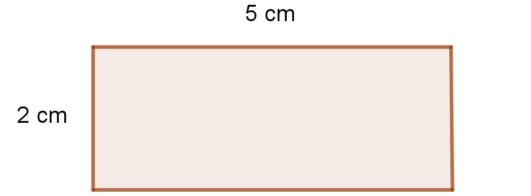
Skitsen viser et rektangel.
Hvor stor er omkredsen af rektanglet?
Opgave 15
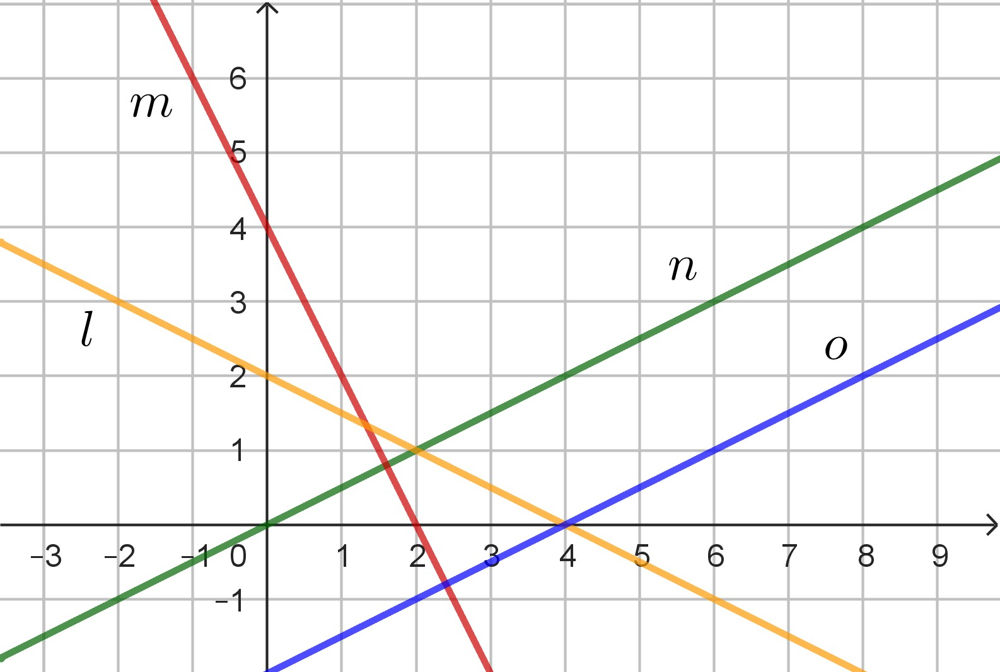
Hvilken af de rette linjer skærer y-aksen i punktet (0,4)?
Sæt X
|
l |
m |
n |
o |
Opgave 16
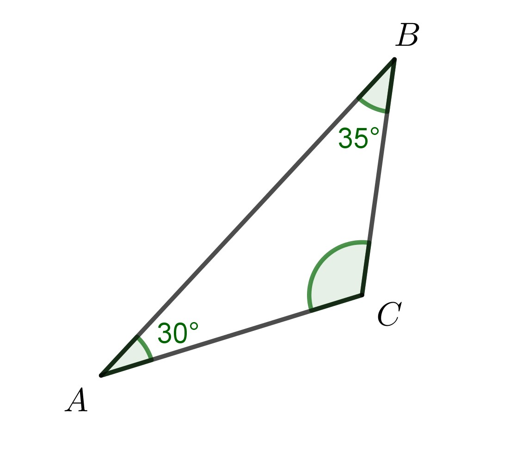
Opgave 17
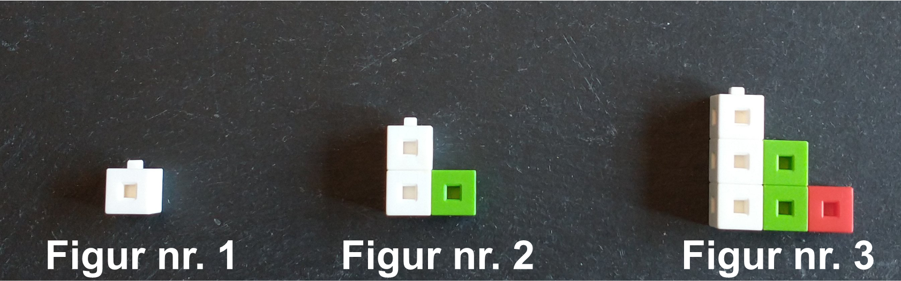
Billedet viser de tre første figurer i en figurfølge. Figurfølgen fortsætter på samme måde, som den er begyndt.
Hvilken figur indeholder 21 centicubes?
Opgave 18

Hvor mange elever var i skole onsdag?
elever.
Hvor stor forskel var der på antal elever de to dage, hvor der var flest og færrest elever?
elever.
Hvor mange elever var der i skole i gennemsnit?
elever.
Opgave 19
 Tegning: Hans Ole Herbst
Tegning: Hans Ole Herbst
Pelle laver et eksperiment, hvor han prøver at kaste en flaske, så den drejer
rundt i luften én gang og lander stående.
Han kaster 15 gange. Flasken lander stående 3 gange.
Hvor stor er sandsynligheden for, at flasken lander stående, ifølge Pelles eksperiment?
Fysik/kemi
Prøven i fysik/kemi består af 24 opgaver, og du kan opnå 1 eller 2 point i hver enkelt opgave. De 24 opgaver er fordelt på 5 områder indenfor fysik/kemi. Du kan samlet få op til 25 point.
Grundstoffernes periodesystem findes sidst i sættet.
1. Atomer og grundstoffer
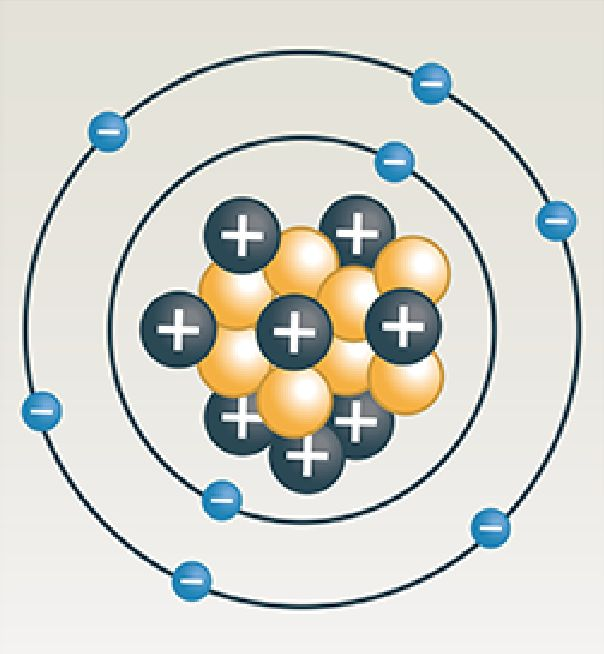
Figur 1.a: En atommodel.Hvilket atomnummer har atomet vist på figur 1.a?
2. Isolering af hus
Figur viser et foto af et hus optaget med et termisk kamera. Huset har sne på dele af taget.
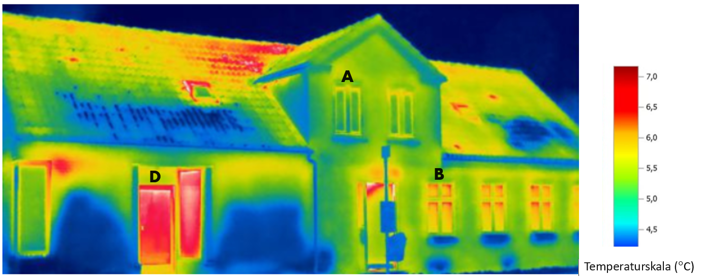
Figur 2.a: Termisk foto af et hus.Hvilken temperatur måles på det termiske foto ved døren (D) på figur 2.a?
Hvilket vindue er bedst isoleret? Anvend figur 2.a.
| Sæt X | |
| vindue A | |
| vindue B |
Varme er elektromagnetisk IR-stråling.
 Figur 2.b: Det
elektromagnetiske spektrum.
Figur 2.b: Det
elektromagnetiske spektrum.
Flamingo er et isoleringsmateriale.
En elev undersøger temperaturen i en flamingokasse med låg. Der er en tændt glødepære i
kassen.
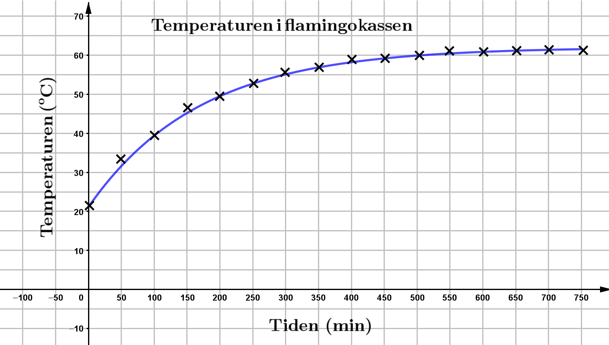
Figur 2.c: Temperaturen som funktion af tiden.| Mulige ord |
| stiger, aftager, 55, 62, 70, større end, mindre end, den samme som |
| Grafen viser, at temperaturen i
begyndelsen. Efter et stykke tid er temperaturen i kassen konstant på °C. Det betyder at energien, som pæren tilfører kassen, er den energi, der udsendes fra kassen. |
3. Nitrogens kredsløb
 Figur 3.a: Nitrogens kredsløb
Figur 3.a: Nitrogens kredsløb
På figur 3.a indgår forskellige kemiske forbindelser. Sæt X ved den forbindelse der er et grundstof:
| Sæt X | |
| NH4+ (ammonium) | |
| NO (nitrogenoxid) | |
| N2 (nitrogen) | |
| NO3− (nitrat) |
| Udsagn | Sæt X |
| De to stoffer er helt kemisk ens. | |
| Der er to nitrogenatomer i begge stoffer. | |
| Der er forskelligt antal oxygenatomer i de to stoffer. | |
| Begge stoffer har en elektrisk ladning på 1. |
Syreregn er en del af nitrogens kredsløb. Hvilken pH-værdi kan syreregn have?
Kaliumnitrat (KNO3) er et salt, der anvendes som gødning.
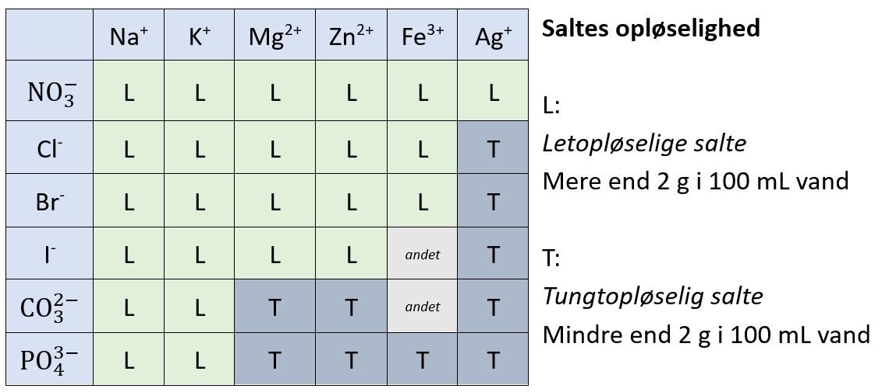
Tabel 3.1Kan der opløses mere end 2 g kaliumnitrat (KNO3) i 100 mL vand? Anvend tabel 3.1.
Kaliumnitrat er en del af NPK-kunstgødning. Når det spredes, så findes det i de øverste jordlag.
Hvilken hypotese om kemiske forbindelser, der indeholder nitrat (NO3−), kan opstilles ud fra tabel 3.1.
| Sæt X | |
| Nitratforbindelser opløses let i vand og udvaskes delvist. | |
| Nitrat (NO3−) binder sig til jordens negative ladede lerpartikler og bliver liggende i de øverste jordlag. | |
| Der kan opløses mindre end 2 g nitratforbindelser i 100 mL vand. |
4. Vandkraft
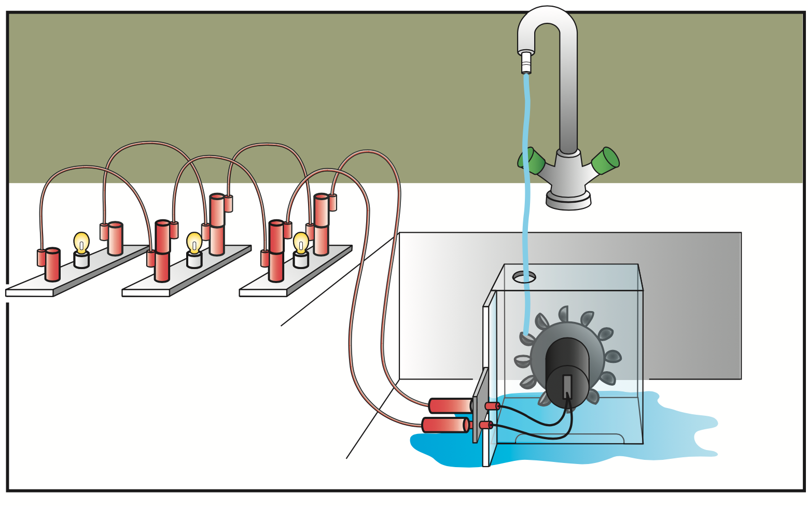
Figur 4.a: Model.Hvilken energiomsætning finder sted i generatoren?
| Energiomsætning | Sæt X |
| kinetisk energi → elektrisk energi | |
| elektrisk energi → strålingsenergi | |
| potentiel energi → elektrisk energi |
| Sæt X | |
| Pærerne blinker. | |
| Pærerne lyser stærkere. | |
| Pærerne lyser svagere. |
| Lyser | Lyser ikke | |
| Pære 2 | ||
| Pære 3 |
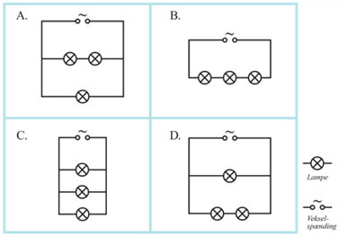
Figur 4.b: Diagrammer5. Ballon
En elev blander eddike og natron i en flaske og sætter en ballon på flaskens hals.
Eddike har en pH-værdi på 3.
Natron er en base.
Hvad sker der med eddikes pH-værdi, når der tilsættes natron?
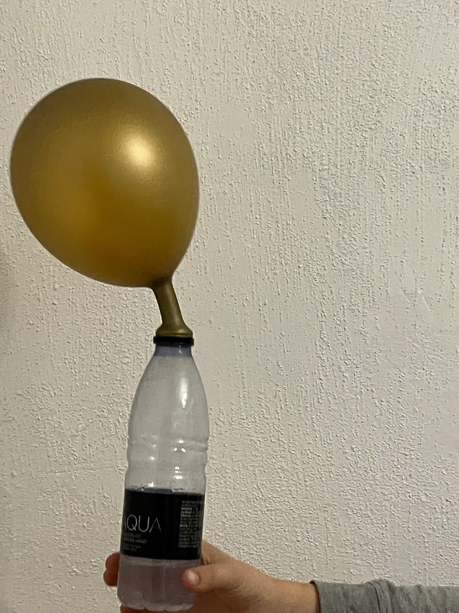
Figur 5.a: Ballonen pustes op af en gas.Eleven tager ballonen af flasken og bliver overrasket over ballonens vægt. Derfor vejes ballonen.
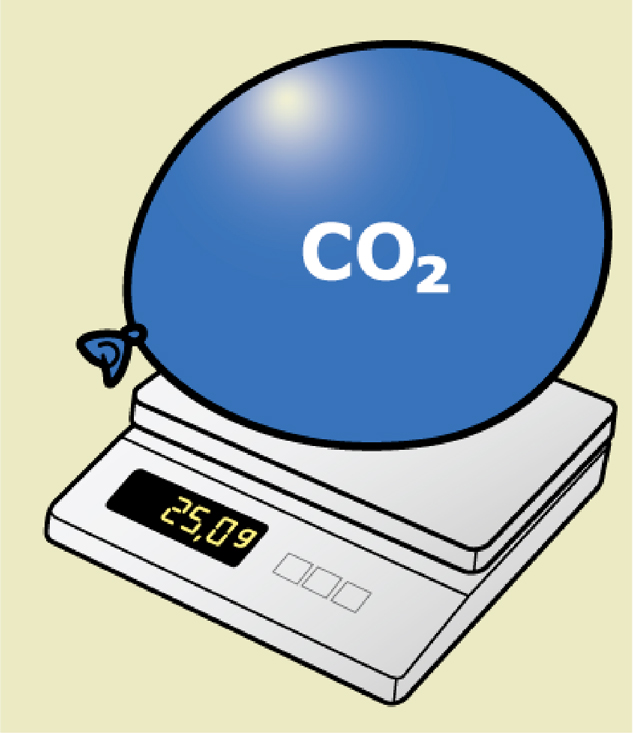 |
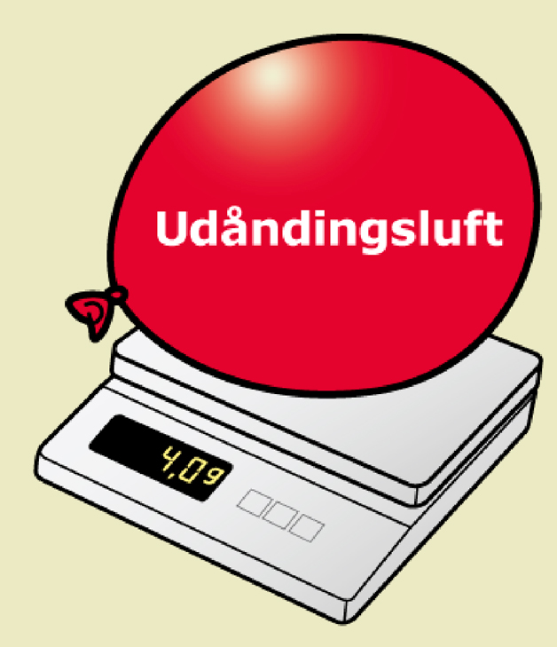 |
| Ballonen fra flasken | Ballon som eleven har pustet op |
Hvad vil eleven opleve, når de to balloner slippes?
Syren i eddike har formlen CH3COOH, og natron har formlen NaHCO3.
Hvilken af følgende kemiske forbindelser kan der dannes i reaktionen. Sæt 1 X.
Syren i eddike kan skrives på to måder: C2H4O2 eller CH3COOH.
Sæt X ved den strukturformel, der viser syren i eddike (C2H4O2).
|
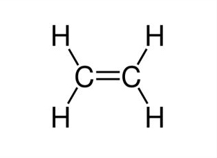 |
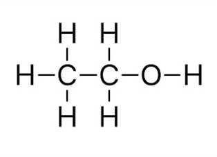 |
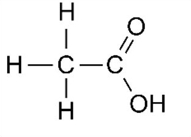 |
Oplysninger til brug for Copydan
Anvendt materiale i Dansk:
Kathrine Bækgaard Gade: ”Telefonskræk: Jeg vil hellere have en nål gennem næsen end at ringe
til
en piercer”
Heartbeats.dk
30. september, 2024
Anvendt materiale i engelsk:
Image credit: “Nemesis: Famous rollercoaster at Alton Towers theme park to shut for a year",
CBBC
Newsround, 5 November 2022, viewed September 2024.
(https://www.bbc.co.uk/newsround/63525284)
Dette prøvesæt er omfattet af ophavsretten, jf. ophavsretslovens § 1.
Prøvesættet må alene anvendes til den på prøvesættet anførte prøve.
Al anden anvendelse af prøvesættet, herunder visning eller deling f.eks. via
internettet,
sociale medier, portaler og bøger, udgør en krænkelse af Børne- og
Undervisningsministeriets
og evt. tredjemands ophavsret og er ikke tilladt.
Overtrædelse af ophavsretten kan være erstatningspådragende og/eller strafbart.
Prøvesættet kan dog, efter at prøven er afsluttet, anvendes til undervisningsbrug på
uddannelser m.v. omfattet af den lovgivning, som Styrelsen for Undervisning og Kvalitet
administrerer.